Getting Started
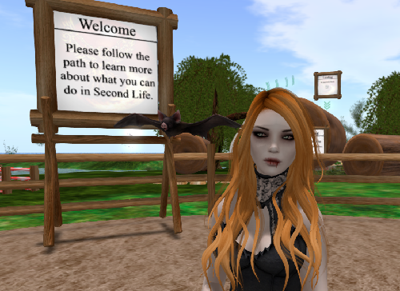Welcome to Second Life, one of the greatest and most expansive virtual worlds to exist and to have ever existed. I hope that you find everything you're looking for, and fulfill your dreams in this ever-expansive world. But, let's get started right away!
Pictured here, we have the first thing you see upon loading into the Second Life client. If you're using the Firestorm client (I'm assuming brand new users are likely not aware of this, and therefore won't be going over it until later) you'll notice that this starting area is exactly the same.
Previously, I was unaware that Linden Labs had adopted the training island utilized by the 3rd party viewer Firestorm devs. But that is very likely because I have not made a new account and logged in on the vanilla Second Life client since 2011!
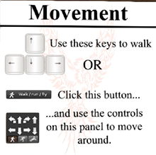The first thing you'll want to do, is completely ignore this! The vanilla Second Life viewer allows WASD movement by default. In order to run, all you've got to do is double tap the W key (and hold, of course). I'm not sure why the Firestorm developers are assuming people are playing with one hand on a mouse, and nothing else, but it doesn't matter. You just don't need to do these things.
If we move forward and follow the stones, utilizing what we just learned, we'll come up to a new sign indicating that in order to jump, you need to press the Page Up key. This is also outdated information. Simply approach the candy cane colored hurdles in front of you, and while moving, press the E key.
Voila, you have jumped. That's one hurdle, covered.
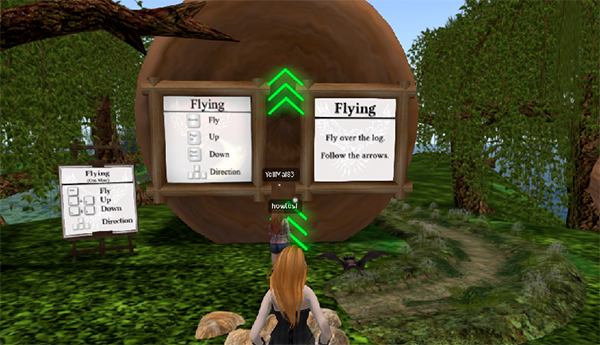
Next, we'll keep following the stones until we come to a new set of instructions. How to fly! These instructions are also a little bit out of date, but we're just going to do exactly what we did before, except this type you're going to hold the E key.
Once you've propelled yourself into the air, let go of the E key! Else you'll go much further into the sky than you likely want to. Now that you're like a bat in the wind, use the WASD keys to move around as you would if you were on the ground, and move toward the next sign.
This sign will of course say, "hold Page Down to land," but we're going to also ignore that and simply hold down the C key until we hit solid ground. If, for whatever reason, you're still hovering and not back on your feet, you can press the F key to land automatically.
Now, continue following the stones until you reach the next set of instructions presented on signs.
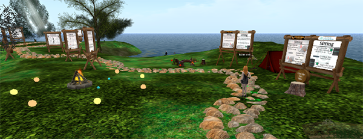
Here we'll be learning how to sit, not only for relaxation, but for socialization!
Firstly, if you'd like to sit on the wooden stump, all you have to do is right click on the stump, and then click "Sit here." In doing this, your avatar will enter its default sit animation set by whichever you've chosen upon account creation (this can be customized and changed, but we'll discuss that later).
In order to stand up, click the "Stand" button at the bottom center of your screen. Try this same technique out on the sleeping bag inside of the little red tent. You'll notice that your avatar goes into a sleep position. This is because that specific object is loaded with an animation that plays for your avatar only upon sitting on it.
Jumping off that point, stand up again if you decided to take a nap in the tent, and then turn toward the campfire. If you hover your mouse over the rotating glowing balls (called Poseballs around the virtual world), you'll notice it turns into a hand over a chair sort of icon. This is an automatic "sit", where no right clicking is needed. Many modern items in Second Life offer this and require no right click sitting (although some items that operate like this do still exist).
Go ahead and give them a shot and see what happens! You'll notice that if you click on one of the glowing balls, your avatar will immediately beam over to the one you clicked and start dancing (very weirdly if I might say). No, you're not stuck like this. In order to stop, just hit that "Stand" button again, and you're back to normal.
Once you're done messing around with sitting and dancing, continue following the stones until you come to the signs that detail how to use the camera. Your cam is one of the most powerful tools in Second Life, and allows you to see things further than what you can see just simply staring at the back of your avatar.
If you're on PC, hold down the alt key, or if you're on Mac, hold down the Option key, and you'll see (while still holding) that your mouse pointer has suddenly become a magnifying glass with a plus sign inside of it. Click and hold on your avatar, or any other point, and while holding, move your mouse around. This will allow you to pan around whatever you're focused on! Pull back and push forward with your mouse in order to zoom.
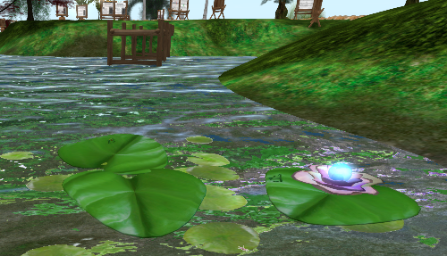You can use these skills to zoom and focus in on things very far away, which is especially useful if you're socially awkward. If you're zoomed out real far, or focused on something that isn't your avatar, press the Esc key to reset the camera's position. Go ahead and take the third sign's suggestion and use these camera control tricks to zoom in on the lillypads. Reset your camera once you're ready to move on.
Moving on down the rock path, we'll next learn how to communicate with fellow residents! Since the window is likely not open for you to see just yet, you'll want to click the button at the bottom center of your screen that says "Chat." This will bring up a window displaying nearby chat, and any private messages in alternate tabs that you may have (picture here, you can see I received a few private messages from other users in the starting area).
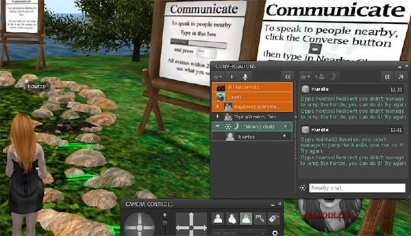
In order to speak locally to those around you, ensure that you have the "nearby chat" tab highlighted, and then click inside the white box at the bottom of the window, type your message and then press enter, done! As the sign says, all other people within 20 meters of you will be able to see your message.
In order to initiate a private message with someone, simply right click on them and then click "IM." This will immediately switch your highlighted chat tab to a private message window with that user, where you can enter your first message. If you've decided to do this, why not say hi!
You can also add users to your friends list with this technique, by right clicking on them again and then "Add Friend." Much like buddy lists of the bygone era of the 90s, this lets you keep in touch with those you've met and view their online status.
If you have a mic plugged in and would instead like to speak locally utilizing your voice, simply click the "Speak" button down on the bottom bar, and speak! In order to turn it off again, just click the same button one more time. If it's not working, you may need to adjust your audio settings. To do that, click the "Me" button at the top left of your screen, then click the "Sound & Media" tab. Once there, click the "Voice Input/Output devices" and configure your input device. Click Okay once you've fixed it.
Remember, when speaking via text or voice, to always follow proper etiquette. In that, you should always be kind and respectful when speaking to others. Do not engage in harassment or hate speech. These things can result in strikes against your account. And they're pretty easy to avoid, since I've been doing this for 13 years on the same account!
Further down the path, you'll notice some signs detailing the different age classifications that exist within the virtual world.
At the top, in your "address bar," you'll notice a blue G next to the name of the area you're in. Next to the G, you'll see it says "General." This is directly related to the rating of the area you're in. General is for everyone, including kids and teenagers. Because of all of the things you can do in Second Life, it is very important to always remain clothed in these areas, and do not engage in lude or sexual acts.
The same goes for "M" or "Moderate" rated areas. In these areas, there is some nudity allowed, but full-on genitalia display and lewd behavior is frowned upon, and if engaging in these acts in either G or M rated places, your account risks being suspended. If you're at a store trying on clothing in an M rated place, and you're a female avatar, you likely won't face repercussions for removing your clothes, but that's about as far as it can go.
As for Adult or "A" rated sims (sim, for simulation, also server), mostly anything goes, up to what the owner of said sim allows. Things that break the terms of service though, area always restricted. That being up to and including threats of violence and especially age play.
Just a little bit down the road, we'll be next talking about your inventory. Another very important part of Second Life, as this is where you'll manage everything your avatar owns. In order to open your inventory, click the little briefcase icon on the left side of your screen, just beneath the t-shirt symbol.
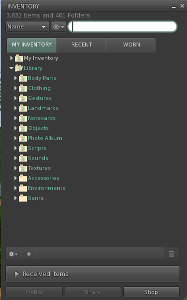It'll look something like this! Your inventory is automatically organized based on type of items you have, or have received. From photos, and clothing, to body parts and even environment settings (a topic for later discussion). Anything you find in here now, in your current state, are items freely available to all residents.
Everything you buy (recently purchased items will be found in the "Recent" tab for easy access), or make, is kept and organized here. It is very much like some sort of filing system. Some have talked about wanting this upgraded to a more modern inventory design, but those of us with a 90,000+ item inventory would hope not!
Moving forward, we'll also talk briefly about editing your shape! There are a few more advanced things on this path that aren't entirely necessary for brand new Second Life users (such as editing clothing pieces), so we'll just go over editing your shape, for now.
In order to edit what you look like, right click on yourself, and then click "Shape." This will automatically center the camera on the front of your avatar in a sort of halfway t-pose. And then you'll also notice a box popup on your screen with different parameters you can mess around with.
Go ahead and try playing around with some of the settings, like head size, height, eye size and more! In order to save your changes, simply click save at the top left of this window, and then click the "X" to remove it from your screen. Alternatively, you can undo changes and simply exit if you do not want to do this at this time.
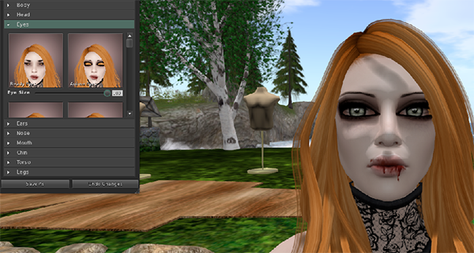
As mentioned, we're going to personally skip over outfit editing, because I'd like to cover this in a more extensive building guide in a way that would make more sense for residents who have at least become acclimated with the virtual world.
Sprinting down the rock cobbled road, we'll come up to the buying and using guide.
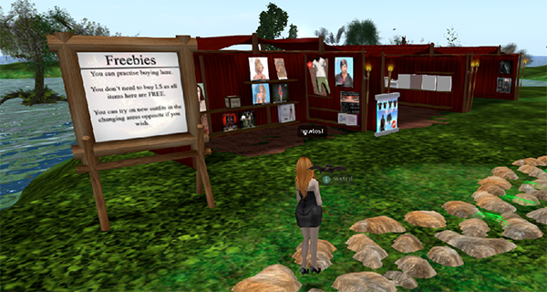
Walk up to the first booth where we can collect some free items, and I'll discuss how to acquire them and use them! Here you'll have what looks like a bunch of photos hanging on the wall. Some of them will switch your cursor to something that looks like a money sign, others won't. This is a great representation of how everyone does things differently in Second Life.
If you click on an item that presents you with a money-sign mouse, it'll bring up a small window detailing what you're about to get, and how much linden it costs to buy. If you click the box on the wall that says "Free Eyes" you'll see that it's offering a bunch of differently colored eyes you can wear, all for the price of 0 lindens (or free!). Go ahead and click the "Buy" button, as this will cost you nothing, and does not require a credit card.
If you've chosen something else, you'll notice that the photos that don't appear to change your mouse cursor will pop up a box on the top right asking if you want to keep the item it's offering, click "Keep."
Now, go back into your inventory, and click the "Recent" tab, so that you can easily find what you've just acquired. Be sure the folder labeled "My Inventory" is expanded (double click to open it), and you'll see new folders of items you've just purchased.
Depending on what you've chosen, some items may be a yellow/orange square in your inventory instead of a folder. This signifies that you have to wear it in order to "unpack" it, which will then add a folder to your inventory. If this is the case, right click on that item that's signified by a yellow box, and click "Add" and "Keep" the items it offers.
Double click the folder called (if you grabbed the free eyes) "Free Eyes (for System and BOM Avatars)", and now you'll see a bunch of different eye colors to choose from, custom made by another resident, just like you! Pick out a color that you like, and then right click on it and choose "Wear."
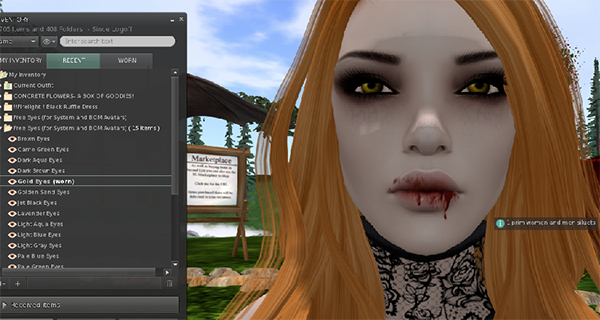
This will immediately alter your eyes to be that color, as it is a brand new texture on the "eyes" clothing layer.
Be aware, that in most circumstances involving equipping new clothing items and accessories, you want to right click and choose the "Add" option, rather than wear. This is because "Wear" replaces whatever you have equipped in the slot it's assigned to, and "Add" will add that item to what you have equipped, replacing nothing. This option won't be given to you when equipping new eyes, because you can only wear one set of eyes at once. But, let's say you're wearing a dress, and you want to put on a necklace. Let's also say both the dress and necklace are assigned to the "Spine" slot on your avatar. If you use the wear option when equipping the necklace, it will remove your dress and put on the necklace. If you use the "Add" option, it will simply add the necklace to things you're wearing, avoiding removing your clothes! (a very useful thing to know!)
Since we're going to go over building and using the marketplace in later guides (there's no need to be buying linden dollars right now), we'll skip ahead to the next, and final beginner guides! Although the starter island does have simple building advice, I wouldn't bother with this, as your are brand new to the virtual world and this is not something you need to know, right away, when simply existing and traveling between worlds.
Following the rocks a bit further, we'll come to a space quickly talking about media and sounds. This is important, because avatars and objects can play sounds within proximity to you, and if you have autoplay turned on, this could be a disturbance if you're sensitive to that sort of thing.
First and foremost, before we even mess with volume, click "Me" up at the top left again, then "Preferences." Then go back to "Sound & Media" and you'll see all the options you need for this.
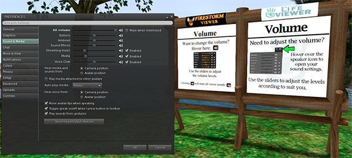
First, you'll notice the volume options, these can also be accessed easily by hovering your mouse over the little speaker at the top right of your screen. More importantly, we have the autoplay options just below that. If you don't want to hear media (like music) coming from objects, some attached to avatars (and separate from voice), uncheck "Play media attached to other avatars." Then, if you don't want media (like Youtube attached to TV objects, and so on) to play automatically, bring up the drop-down menu next to "Auto-play media" and select "Never" or "Ask."
Now you're a bit more prepared to deal with some of the more nefarious type of people in Second Life (there are some). You probably also noticed that I mentioned Youtube and their attachment to objects. This will be something I go over in my building guides, but yes, you can watch Youtube, and all manner of things from within Second Life itself! Be sure you've clicked "Okay" on the preferences window to ensure your settings have been saved.
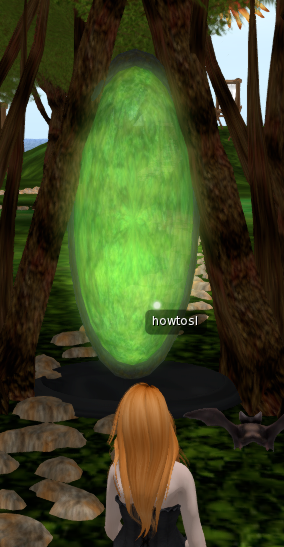Walk on along to the end of this beginner's tutorial, and we'll learn about portals. Some places uses them, some don't, but it's useful to know what they are, just in case you come upon them.
Portals are used in places like roleplay sims, or social sims, where the creators have deemed it necessary to allow residents to jump from one location to another in short bursts. This could be because someone built a building with many floors, but not enough space to put them all next to each other, or just a way to get from one objective to the next. Whichever the reason, click on the green portal in front of you to teleport to the next destination. Boom, you're there, and we're almost at the end.
Now, these ports are different from teleports. Teleporting from one region to another involves using landmarks. Landmarks are like bookmarks. If you'd like to save a "bookmark" to this starter island you're on, click on the World button up at the top of your screen, and then "Landmark this Place." This will popup a new window where you can set a name for your bookmark (along with other information). Click "Okay" on that window, and it will now be saved into your inventory, just like any other item.
If you have a friend you'd like to teleport directly to you, this can also be accomplished quite easily. Back in the chat window, click onto a tab where you have a private conversation with someone. Then, right click on their name. After that, simply click "Offer teleport" and they'll receive a notification that you've offered them a direct teleport to your location. Whether they arrive or not, depends on if they accepted your offer, or not.
Finally, if you click the "Map" button at the bottom of your screen, a window will popup and show you your exact location ... in the entire world of Second Life!
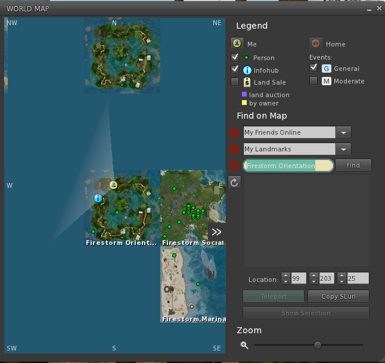
Shown on the map, you can see where you are by the little yellow circle with a person icon in it, all with a field of vision pointing out of it (this is the direction you're currently facing). If you hover your mouse over the map and scroll down, it'll zoom out to show you all of the surrounding land. Try zooming all the way out!
Once you've zoomed out as far as you can, you'll see a map of blue water littered in little green dots. These are all places either owned by Linden Labs, or other residents! Click the "X" button at the top right of the window once you're done viewing this map.
As you can tell, Second Life is a very large place, and there are many places to venture out to, to see, to experience, and it's all at your fingertips!
Follow the rock path to the end and walk through the final portal that appears to be a photo of some chairs sitting in grass. You'll be teleported to a new user orientation social area where you can test out all that you've learned here today, and more!
If you'd like to know more, simply use the link at the bottom of this page to return to the guide index, and thank you. Thank you for reading and learning with me all the way through. I hope you enjoy the beginnings of your new, second life.